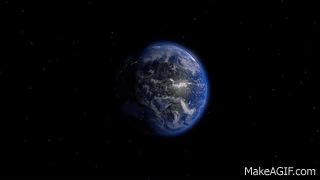
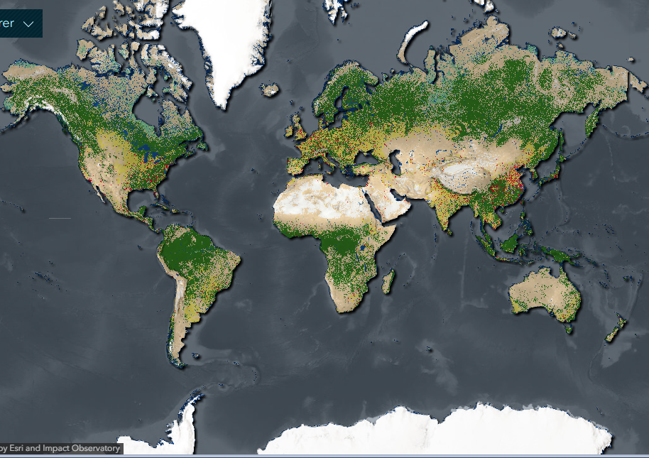
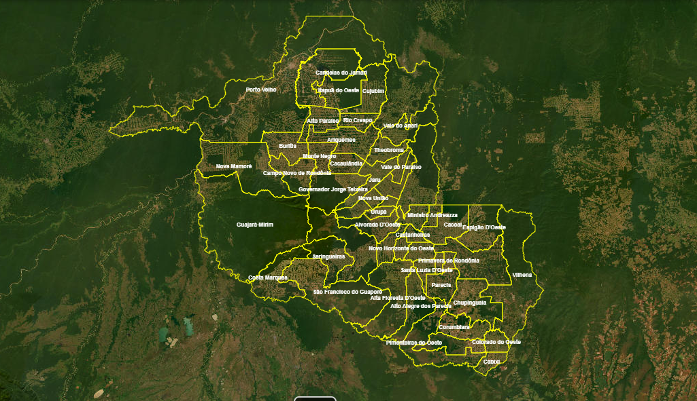

Integração de imagens orbitais para análise territorial, monitoramento ambiental e geração de informações estratégicas.
A utilização de imagens orbitais permite identificar mudanças na superfície terrestre, acompanhar fenômenos ambientais e apoiar decisões estratégicas através da inteligência geoespacial.

Integração de imagens de satélite para análise e inteligência territorial.
Processamento de imagens captadas por satélites para análise do território.
Acompanhamento das transformações ambientais, urbanas e econômicas.
Combinação de informações geográficas para gerar análises estratégicas.
Imagens processadas
Áreas monitoradas
Atualização dos dados
Precisão analítica
Identificação de queimadas, desmatamento e alterações ambientais.
Análise do crescimento das cidades e ocupação territorial.
Informações para auxiliar decisões estratégicas do governo.

Visualização de imagens de satélite para monitoramento territorial, ambiental e análise geográfica.
Acessar Geoportal →
Integração de camadas espaciais para gerar informações estratégicas sobre o território.
Explorar Dados →